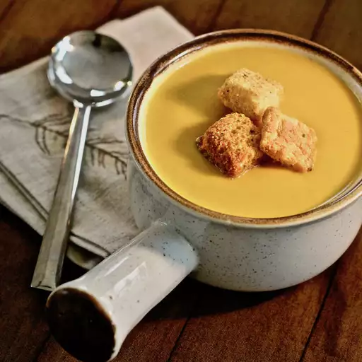

Home
Curried Butternut Squash and Pear Soup

Description
A creamy butternut squash soup with pear and a little kick from curry powder.
Ingredients
- 1 2-pound butternut squash
- 3 tablespoons of unsalted butter
- 1 diced onion
- 2 minced cloves of garlic
- 2 teaspoons of minced ginger
- 1 tablespoon of curry powder
- 1 teaspoon of salt
- 4 cups of lower sodium chicken broth
- 2 riped and firm bartlett pears, diced into 1 inch cubes
- 1/2 cup of half and half
Steps
- Preheat an oven to 375 degrees F (190 degrees C). Line a rimmed baking sheet with parchment paper.
- Cut squash in half lengthwise; discard seeds and membrane. Place squash halves, cut sides down, on the prepared baking sheet. Roast in preheated oven until very soft, about 45 minutes. Scoop the pulp from the peel, and reserve.
- Melt butter in a large soup pot over medium heat. Stir in the onion, garlic, ginger, curry powder, and salt. Cook and stir until the onion is soft, about 10 minutes. Pour the chicken broth into the pot, and bring to a boil. Stir in the pears and the reserved squash, and simmer until the pears are very soft, about 30 minutes.
- Pour the soup into a blender, filling the pitcher no more than halfway full. Hold down the lid of the blender with a folded kitchen towel, and carefully start the blender. Puree in batches until smooth. Return the soup to the pot, stir in the half and half, and reheat.
Originial recipe here